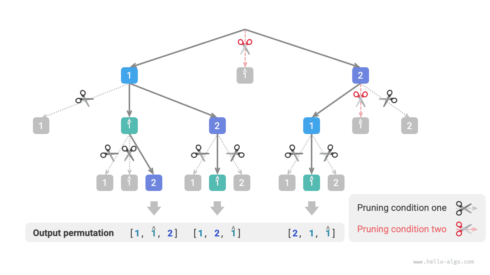

التتبّع الرجعي
مسألة التباديل
مسألة التباديل تطبيق كلاسيكي لخوارزميات التتبّع الرجعي. وتُعرَّف بأنها إيجاد جميع الترتيبات الممكنة لعناصر مجموعة معطاة (مثل مصفوفة أو سلسلة نصية).
يوضح الجدول أدناه عدة أمثلة لمجموعات بيانات، تشمل مصفوفات الإدخال وما يقابلها من تباديل.
جدول
| مصفوفة الإدخال | جميع التباديل |
|---|---|
| $[1]$ | $[1]$ |
| $[1, 2]$ | $[1, 2], [2, 1]$ |
| $[1, 2, 3]$ | $[1, 2, 3], [1, 3, 2], [2, 1, 3], [2, 3, 1], [3, 1, 2], [3, 2, 1]$ |
حالة العناصر المختلفة
معطى مصفوفة أعداد صحيحة لا تحتوي عناصر مكررة، أعد جميع التباديل الممكنة.
من منظور خوارزميات التتبّع الرجعي، يمكننا تصوّر عملية توليد التباديل كنتيجة لسلسلة من الاختيارات. لنفترض أن مصفوفة الإدخال هي $[1, 2, 3]$. إذا اخترنا أولاً $1$، ثم اخترنا $3$، وأخيراً اخترنا $2$، حصلنا على التبديل $[1, 3, 2]$. ويعني التتبّع الرجعي التراجع عن اختيار ما ثم تجربة اختيارات أخرى.
ومن منظور شيفرة التتبّع الرجعي، تتكوّن مجموعة المرشحين choices من جميع عناصر مصفوفة الإدخال، وتكون الحالة state هي العناصر التي اختيرت حتى الآن. لاحظ أن كل عنصر لا يمكن اختياره إلا مرة واحدة، لذا ينبغي أن تكون جميع عناصر state فريدة.
وكما يوضح الشكل أدناه، يمكننا نشر عملية البحث في شجرة تعاودية، حيث تمثل كل عقدة في الشجرة الحالة الحالية state. وبدءاً من العقدة الجذرية، وبعد ثلاث جولات من الاختيارات، نصل إلى عقدة ورقة، وتقابل كل عقدة ورقة تبديلاً واحداً.

تشذيب الاختيارات المكررة
لضمان اختيار كل عنصر مرة واحدة فقط، نفكّر في إدخال مصفوفة منطقية selected، حيث يشير selected[i] إلى ما إذا كان choices[i] قد اختير. وننفّذ عملية التشذيب التالية استناداً إليها.
- بعد اتخاذ القرار
choices[i]، نضبطselected[i]على $\text{True}$، إشارةً إلى أنه قد اختير. - عند اجتياز قائمة المرشحين
choices، نتخطى جميع العقد التي اختيرت، وهذا هو التشذيب.
وكما يوضح الشكل أدناه، لنفترض أننا اخترنا $1$ في الجولة الأولى، و$3$ في الجولة الثانية، و$2$ في الجولة الثالثة. فحينئذٍ نحتاج إلى تشذيب فرع العنصر $1$ في الجولة الثانية، وتشذيب فرعي العنصرين $1$ و$3$ في الجولة الثالثة.

وبمراقبة الشكل أعلاه، نجد أن عملية التشذيب هذه تقلّص حجم فضاء البحث من $O(n^n)$ إلى $O(n!)$.
تنفيذ الشيفرة
بعد فهم المعلومات أعلاه، يمكننا ملء الفراغات في الشيفرة القالبية. ولاختصار الشيفرة الإجمالية، لا ننفّذ كل دالة في القالب على حدة، بل ننشرها داخل الدالة backtrack():
Go
/* التباديل I */
func permutationsI(nums []int) [][]int {
res := make([][]int, 0)
state := make([]int, 0)
selected := make([]bool, len(nums))
backtrackI(&state, &nums, &selected, &res)
return res
}
TypeScript
/* التباديل I */
function permutationsI(nums: number[]): number[][] {
const res: number[][] = [];
backtrack([], nums, Array(nums.length).fill(false), res);
return res;
}
حالة العناصر المكررة
معطى مصفوفة أعداد صحيحة قد تحتوي عناصر مكررة، أعد جميع التباديل الفريدة.
لنفترض أن مصفوفة الإدخال هي $[1, 1, 2]$. وللتمييز بين العنصرين المكررين $1$، نرمز إلى الثاني منهما بـ $\hat{1}$.
وكما يوضح الشكل أدناه، فإن نصف التباديل المولَّدة بالطريقة السابقة مكرر.

فكيف نزيل التباديل المكررة؟ أسلوب مباشر هو استخدام مجموعة تجزئة (hash set) لإزالة تكرار نتائج التباديل مباشرة. غير أن هذا ليس أنيقاً، لأن فروع البحث التي تولّد تباديل مكررة غير ضرورية وينبغي تحديدها وتشذيبها مبكراً، وهو ما يحسّن كفاءة الخوارزمية أكثر.
تشذيب العناصر المتساوية
راقب الشكل أدناه. في الجولة الأولى، اختيار $1$ أو اختيار $\hat{1}$ مكافئ. وجميع التباديل المولَّدة تحت هذين الاختيارين مكررة. لذلك ينبغي تشذيب $\hat{1}$.
وبالمثل، بعد اختيار $2$ في الجولة الأولى، ينتج العنصران $1$ و$\hat{1}$ في الجولة الثانية فرعين مكررين أيضاً، لذا ينبغي تشذيب $\hat{1}$ في الجولة الثانية كذلك.
وهدفنا جوهرياً هو ضمان ألا يُختار من العناصر المتساوية المتعددة إلا عنصر واحد في جولة اختيار معينة.

تنفيذ الشيفرة
بناءً على شيفرة المسألة السابقة، نهيّئ مجموعة تجزئة duplicated في كل جولة من الاختيارات لتسجيل العناصر التي جُرِّبت بالفعل في تلك الجولة، ونشذّب العناصر المتساوية:
بافتراض أن العناصر مختلفة مثنى مثنى، فإن عدد تباديل $n$ عنصراً هو $n!$ (المضروب). وعند تسجيل النتائج نحتاج إلى نسخ قائمة طولها $n$، وهو ما يستغرق زمن $O(n)$. لذلك يكون التعقيد الزمني $O(n! \cdot n)$.
أقصى عمق للتعاود هو $n$، وهو ما يستهلك مساحة إطارات المكدس $O(n)$. وتستهلك selected مساحة $O(n)$. ويوجد في الوقت نفسه $n$ مجموعة duplicated على الأكثر، وهو ما يستهلك مساحة $O(n^2)$. لذلك يكون التعقيد المكاني $O(n^2)$.
مقارنة طريقتي التشذيب
لاحظ أنهما وإن كان كل من selected وduplicated مستخدماً في التشذيب، فلهما هدفان مختلفان.
- تشذيب الاختيارات المكررة: توجد
selectedواحدة فقط طوال عملية البحث بأكملها. وهي تسجّل العناصر المضمَّنة في الحالة الحالية، وهدفها منع تكرار ظهور عنصر ما فيstate. - تشذيب العناصر المتساوية: تحتوي كل جولة من الاختيارات (كل استدعاء للدالة
backtrack) على مجموعةduplicated. وهي تسجّل العناصر التي اختيرت في تكرار هذه الجولة (حلقةfor)، وهدفها ضمان ألا تُختار العناصر المتساوية إلا مرة واحدة.
يوضح الشكل أدناه النطاق الفعلي لشرطي التشذيب. لاحظ أن كل عقدة في الشجرة تمثل اختياراً، وأن العقد الواقعة على المسار من الجذر إلى عقدة ورقة تشكّل تبديلاً.
